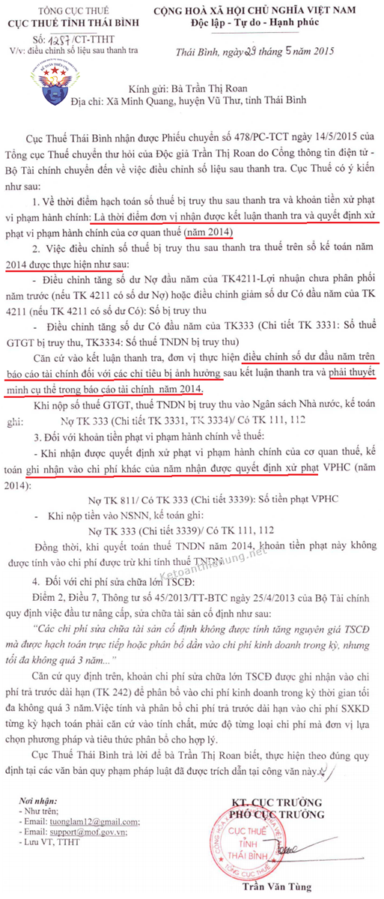

Hướng dẫn hạch toán tiền truy thuế sau thanh tra; Cách hạch toán tiền chậm nộp thuế TNDN; Cách hạch toán tiền phạt nộp chậm tờ khai thuế GTGT, TNCN, lệ phí môn bài...
Cần phần biệt:
- Tiền Thuế truy thu (VD: Truy thu thuế GTGT, Truy thu thuế TNDN...)
- Tiền phạt chậm nộp thuế
=> Là 2 khoản khác nhau và hạch toán khác nhau nhé, cụ thể như sau:
-> Hiện tại có nhiều Chi cục hướng dẫn cách hạch toán truy thu thuế và hạch toán tiền phạt chậm nộp khác nhau -> Kê toán Diệu Tâm xin Tổng hợp các văn bản, công văn để các bạn tham khảo nhé.
Các công văn hướng dẫn hạch toán truy thu thuế sau khi quyết toán, hạch toán tiền nộp chậm tiền thuế cụ thể như sau:
------------------------------------------------------------------------------------------
Lưu ý: Khoản tiền phạt chậm nộp Cuối kỳ kết chuyển:
|
1. Trích theo CỔNG THÔNG TIN ĐIỆN TỬ BỘ TÀI CHÍNH ngày 06/09/2017 (http://www.mof.gov.vn/) Câu hỏi: Xin cho hỏi về phương pháp hạch toán kế toán nghiệp vụ ghi nhận truy thu thuế GTGT, thuế TNDN, phạt chậm nộp sau khi có Quyết định xử phạt của Cơ quan Thanh tra. - Trường hợp cụ thể của Công ty: Năm 2017, Công ty có Cơ quan Thanh tra kiểm tra quyết toán thuế niên độ từ 2009 đến 2016. Cơ quan Thanh tra ra Quyết định xử phạt phải nộp thêm số thuế GTGT, thuế TNDN, phạt chậm nộp, trong đó giai đoạn 2011-2015 có tăng doanh thu phải nộp thuế TNDN. - Vậy Công ty phải hạch toán kế toán như thế nào để phù hợp với Chế độ và Chuẩn mực Kế toán hiện hành. - Kính mong Bộ Tài Chính hướng dẫn chi tiết. Xin chân thành cảm ơn. (06/09/2017) Trả lời: Đoạn 03 Chuẩn mực kế toán số 29 – Thay đổi chính sách kế toán, ước tính kế toán và các sai sót quy định: “...Ảnh hưởng về thuế của việc sửa chữa các sai sót kỳ trước và điều chỉnh hồi tố đối với những thay đổi trong chính sách kế toán được kế toán và trình bày phù hợp với Chuẩn mực kế toán số 17 “Thuế thu nhập doanh nghiệp””. Điểm b Đoạn 57 Chuẩn mực kế toán số 17 - Thuế thu nhập doanh nghiệp quy định về các thành phần chủ yếu của chi phí (hoặc thu nhập) thuế thu nhập gồm: “Các điều chỉnh trong năm cho thuế thu nhập hiện hành của các năm trước;” Như vậy, trường hợp sau quyết toán thuế, Công ty bị cơ quan Thanh tra thuế ra quyết định xử phạt phải nộp thêm thuế GTGT, thuế TNDN và phạt chậm nộp, công ty thực hiện hạch toán như sau:
------------------------------------------------------------
Cách hạch toán tiền truy thu thuế sau thanh tra: Phản ánh Thuế TNDN phải nộp, ghi: Nợ TK 8211 – Chi phí thuế thu nhập doanh nghiệp hiện hành Có TK 3334 - Thuế thu nhập doanh nghiệp Khi nộp tiền vào Ngân sách nhà nước, ghi: Nợ TK 3334 - Thuế thu nhập doanh nghiệp Có các TK 111, 112 Phản ánh Thuế GTGT phải nộp bổ sung, ghi: Nợ TK 811 – Chi phí khác Có TK 3331 - Thuế GTGT phải nộp Khi nộp tiền vào Ngân sách nhà nước, ghi: Nợ TK 3331 - Thuế GTGT phải nộp Có các TK 111, 112
--------------------------------------------------------------
Cách hạch toán tiền phạt chậm nộp thuế: Phản ánh số tiền phạt nộp chậm, ghi: Nợ TK 811 – Chi phí khác Có TK 3339 – Phí, lệ phí và các khoản phải nộp khác Khi nộp tiền vào Ngân sách nhà nước, ghi: Nợ TK 3339 – Phí, lệ phí và các khoản phải nộp khác Có các TK 111, 112 Trên đây là ý kiến trả lời của Vụ Chế độ Kế toán và Kiểm toán, đề nghị Độc giả thực hiện theo nội dung trên./.
(Nguồn: http://www.mof.gov.vn/)
|
Lưu ý: Khoản tiền phạt chậm nộp Cuối kỳ kết chuyển:
Nợ TK 911
Có TK 811
Theo khoản 2 điều 4 Thông tư 96/2015/TT-BTC quy định: Các khoản chi không được trừ khi xác định thu nhập chịu thuế bao gồm:
"2.36. Các khoản tiền phạt về vi phạm hành chính bao gồm: vi phạm luật giao thông, vi phạm chế độ đăng ký kinh doanh, vi phạm chế độ kế toán thống kê, vi phạm pháp luật về thuế bao gồm cả tiền chậm nộp thuế theo quy định của Luật Quản lý thuế và các khoản phạt về vi phạm hành chính khác theo quy định của pháp luật."
-> Như vậy: Khoản tiền phạt chậm nộp thuế, vi phạm hành chính ... sẽ không được trừ khi tính thuế TNDN (Cuối năm khi lập Tờ khai quyết toán thuế TNDN thì phải loại ra nhé)
----------------------------------------------------------------------------------------------
Thời điểm hạch toán truy thu thuế sau thanh tra và tiền phạt chậm nộp thuế:
2. Theo Công văn 1287/CT-TTHT ngày 29/05/2015 của Cục thuế Tỉnh Thái Bình:
-----------------------------------------------------------------------------------------------------
3. Theo Công văn số 927/CT-TTHT của Cục Thuế tỉnh Hải Dương ban hành ngày 26/3/2015 về việc hướng dẫn nghiệp vụ điều chỉnh sổ sách kế toán sau khi có kết luận thanh tra thuế.
----------------------------------------------------------------------------------------------
4. Theo Công văn 3111 /CT-TTHT ngày 13 tháng 8 năm 2014 của Cục thuế Nam Định:
-----------------------------------------------------------------------------------------
5. Theo Công văn Số 13521/CT-TTHT ngày 28/12/2007 của Cục thuế TP. Hồ Chí Minh về việc Hạch toán kế toán số thuế truy thu thêm qua kiểm tra quyết toán thuế:
-------------------------------------------------------------------------------------------------
----------------------------------------------------------------------------------------
Kế toán Diệu Tâm xin chúc các bạn thành công.
Các bạn muốn tìm hiểu chuyên sâu hơn về thuế TNCN, TNDN... Kỹ năng quyết toán thuế thì có thể có tham gia: Khóa học kế toán thuế thực hành thực tế chuyên sâu.
--------------------------------------------------------------------
Có TK 811
Theo khoản 2 điều 4 Thông tư 96/2015/TT-BTC quy định: Các khoản chi không được trừ khi xác định thu nhập chịu thuế bao gồm:
"2.36. Các khoản tiền phạt về vi phạm hành chính bao gồm: vi phạm luật giao thông, vi phạm chế độ đăng ký kinh doanh, vi phạm chế độ kế toán thống kê, vi phạm pháp luật về thuế bao gồm cả tiền chậm nộp thuế theo quy định của Luật Quản lý thuế và các khoản phạt về vi phạm hành chính khác theo quy định của pháp luật."
-> Như vậy: Khoản tiền phạt chậm nộp thuế, vi phạm hành chính ... sẽ không được trừ khi tính thuế TNDN (Cuối năm khi lập Tờ khai quyết toán thuế TNDN thì phải loại ra nhé)
----------------------------------------------------------------------------------------------
Thời điểm hạch toán truy thu thuế sau thanh tra và tiền phạt chậm nộp thuế:
2. Theo Công văn 1287/CT-TTHT ngày 29/05/2015 của Cục thuế Tỉnh Thái Bình:

-----------------------------------------------------------------------------------------------------
3. Theo Công văn số 927/CT-TTHT của Cục Thuế tỉnh Hải Dương ban hành ngày 26/3/2015 về việc hướng dẫn nghiệp vụ điều chỉnh sổ sách kế toán sau khi có kết luận thanh tra thuế.
|
"Căn cứ Điều 94, Điều 95 Thông tư 200/2014/TT-BTC của Bộ Tài chính ban hành ngày 22/12/2014 hướng dẫn chế độ kế toán doanh nghiệp về hạch toán tài khoản 811 - Chi phí khác; Tài khoản 821 - Chi phí thuế thu nhập doanh nghiệp (áp dụng từ năm tài chính 2015). - Theo các quy định nêu trên, trường hợp Công ty cổ phần tư vấn quy hoạch và thiết kế xây dựng Hải Dương bị truy thu thuế, phạt vi phạm về thuế, tính tiền chậm nộp thuế, Cục Thuế tỉnh Hải Dương hướng dẫn hạch toán như sau: 1. Hạch toán truy thu thuế: Trường hợp Công ty bị truy thu thuế GTGT, thuế TNDN thì tại thời điểm nhận được Quyết định xử lý truy thu, Công ty hạch toán: - Hạch toán tiền Thuế GTGT truy thu: Nợ TK 811 - Chi phí khác. Có TK 3331 - Thuế GTGT phải nộp. - Hạch toán tiền Thuế TNDN truy thu: Nợ TK 821 - Chi phí thuế TNDN Có TK 3334 - Thuế TNDN phải nộp. - Khi nộp tiền thuế: Nợ 3331, 3334 Có 111,112 2. Hạch toán tiền phạt chậm nộp thuế: - Khi nhận quyết định xử lý: Nợ TK 811: Chi phí khác Có TK 3339: Phí lệ phí và các khoản phải nộp - Khi nộp tiền phạt: Nợ TK 3339: Phí lệ phí và các khoản phải nộp Có TK 111/112. Các trường hợp điều chỉnh nêu trên, đơn vị không phải lập lại sổ sách kế toán, cũng như không phải lập lại tờ khai quyết toán thuế TNDN, tờ khai thuế GTGT của các kỳ trước. Cuối năm tài chính khi quyết toán thuế TNDN đơn vị tự loại phần chi phí không được tính vào chi phí hợp lý được trừ khi tính thuế TNDN trên tờ khai quyết toán theo quy định của luật thuế TNDN." |
----------------------------------------------------------------------------------------------
4. Theo Công văn 3111 /CT-TTHT ngày 13 tháng 8 năm 2014 của Cục thuế Nam Định:
|
Ngày 05/8/2014 Cục Thuế Nam Định nhận được Phiếu chuyển số 749/PC-TCT ngày 04/8/2014 của Tổng Cục Thuế chuyển thư hỏi của Bà về việc nộp thuế giá trị gia tăng trên Cổng Thông tin điện tử - Bộ Tài chính, Cục Thuế Nam Định có ý kiến như sau: - Tại đoạn 22, đoạn 23 Chuẩn mực số 29 Hệ thống chuẩn mực kế toán Việt Nam (Ban hành và công bố theo Quyết định số 12/2005/QĐ-BTC ngày 15/02/2005 của Bộ trưởng Bộ Tài chính) quy định: 22. Sai sót có thể phát sinh từ việc ghi nhận, xác định giá trị, trình bày và thuyết minh các khoản mục trên báo cáo tài chính. Báo cáo tài chính được coi là không phù hợp với chuẩn mực kế toán và chế độ kế toán nếu chúng có các sai sót trọng yếu hoặc các sai sót không trọng yếu nhưng cố ý trình bày tình hình tài chính, kết quả hoạt động kinh doanh hay các luồng tiền theo một hướng khác. Những sai sót của kỳ hiện tại được phát hiện trong kỳ đó phải được sửa chữa trước khi báo cáo tài chính được phép công bố. Nếu sai sót trọng yếu được phát hiện ở kỳ sau thì sai sót này phải được điều chỉnh vào số liệu so sánh được trình bày trong báo cáo tài chính của kỳ phát hiện ra sai sót (xem các đoạn từ 23 đến 28). 23. Doanh nghiệp phải điều chỉnh hồi tố những sai sót trọng yếu liên quan đến các kỳ trước vào báo cáo tài chính phát hành ngay sau thời điểm phát hiện ra sai sót bằng cách: (a) Điều chỉnh lại số liệu so sánh nếu sai sót thuộc kỳ lấy số liệu so sánh; hoặc (b) Điều chỉnh số dư đầu kỳ của tài sản, nợ phải trả và các khoản mục thuộc vốn chủ sở hữu của kỳ lấy số liệu so sánh, nếu sai sót thuộc kỳ trước kỳ lấy số liệu so sánh.” Căn cứ các quy định nêu trên và theo trình bày của Bà thì việc Công ty của Bà (sau đây gọi là Công ty) đến thời điểm phê duyệt quyết toán (tháng 5/2014) mới xuất hóa đơn cho tổng giá trị của 02 công trình xây lắp đã có biên bản nghiệm thu hoàn thành bàn giao đưa vào sử dụng từ năm 2012 là không đúng quy định. Tuy nhiên vì Công ty đã nộp thuế GTGT, thuế TNND và tiền nộp phạt theo kết luận của đoàn kiểm tra nên Công ty thực hiện kê khai điều chỉnh thuế GTGT, thuế TNDN đối với phần giá trị công trình tăng thêm vào kỳ kê khai của thời điểm lập hóa đơn. Về hạch toán kế toán: Đối với việc điều chỉnh tăng doanh thu năm 2012 dẫn đến việc phải nộp số thuế bị thiếu và các khoản nộp phạt phát sinh trong năm 2013 theo kết luận của đoàn kiểm tra thì Công ty thực hiện điều chỉnh và hạch toán kế toán vào năm 2013 như sau: - Các khoản tiền nộp phạt được hạch toán vào chi phí khác (TK 811) nhưng không được tính vào chi phí được trừ khi xác định thu nhập chịu thuế TNDN. - Các khoản thuế nộp thiếu (bị truy thu vào năm 2013), Công ty phải điều chỉnh hồi tố trên báo cáo tài chính theo quy định tại Chuẩn mực kế toán số 29, cụ thể: Số tiền thuế bị truy thu làm giảm lợi nhuận chưa phân phối của các năm trước, kế toán tiến hành điều chỉnh như sau: +) Điều chỉnh giảm số dư Có đầu kỳ TK 4211 - Lợi nhuận chưa phân phối năm trước (Nếu TK 4211 có số dư Có) hoặc điều chỉnh tăng số dư Nợ đầu kỳ TK 4211 - Lợi nhuận chưa phân phối năm trước (Nếu TK 4211 có số dư Nợ). +) Đồng thời điều chỉnh tăng số dư Có chi tiết đầu kỳ TK 333 - Thuế và các khoản phải nộp Nhà nước - chi tiết cho từng loại thuế (Nếu TK 333 có số dư Có) hoặc điều chỉnh giảm số dư Nợ chi tiết đầu kỳ TK 333 - Thuế và các khoản phải nộp Nhà nước - chi tiết cho từng loại thuế (Nếu TK 333 có số dư Nợ). Cục Thuế Nam Định trả lời để Bà biết và thực hiện theo đúng các quy định tại văn bản quy phạm pháp luật./. |
-----------------------------------------------------------------------------------------
5. Theo Công văn Số 13521/CT-TTHT ngày 28/12/2007 của Cục thuế TP. Hồ Chí Minh về việc Hạch toán kế toán số thuế truy thu thêm qua kiểm tra quyết toán thuế:
|
"Trả lời văn bản số 15-02/QH-CV/2007 ngày 30/11/2007 của Công Ty TNHH Quốc Hùng về việc hạch toán số thuế truy thu thêm qua kiểm tra quyết toán; Cục thuế TP có ý kiến trả lời như sau : - Căn cứ Chế độ kế toán doanh nghiệp ban hành theo Quyết định số 15/2006/QĐ-BTC ngày 20/03/2006, Chế độ kế toán doanh nghiệp nhỏ và vừa ban hành kèm theo Quyết định số 48/2006/QĐ-BTC ngày 14/09/2006 của Bộ Tài Chính 1. Hạch toán truy thu tiền thuế: Trường hợp năm 2007, Công Ty được Chi Cục thuế Quận Tân Bình kiểm tra quyết toán thuế các niên độ từ năm 2002 đến năm 2005, phải truy thu nộp thêm số thuế GTGT, thuế TNDN, thuế thu nhập cá nhân, thì tại thời điểm nhận được Quyết định xử lý truy thu, Công Ty hạch toán : - Thuế GTGT truy thu thêm: Nợ TK 4211 - Lợi nhuận chưa phân phối năm trước. Có TK 3331 - Thuế GTGT phải nộp - Thuế TNDN truy thu thêm : Nợ TK 4211 - Lợi nhuận chưa phân phối năm trước. Có TK 3334 - Thuế TNDN phải nộp - Thuế Thu nhập cá nhân truy thu thêm : + Trường hợp khấu trừ vào tiền lương của người lao động kỳ này Nợ TK 334- Phải trả người lao động Có TK 3335 - Thuế TNCN phải nộp + Trường hợp do công ty phải trả Nợ TK 4211 - Lợi nhuận chưa phân phối năm trước. Có TK 3335 - Thuế TNCN phải nộp - Khi nộp tiền thuế truy thu thêm: Nợ TK 3331, 3334, 3335 Có TK 111, 112 2.- Về điều chỉnh số trích khấu hao TSCĐ: Trường hợp qua kiểm tra phát hiện Công Ty trích khấu hao cao hơn mức quy định tại Chế độ quản lý sử dụng và trích khấu hao TSCĐ ban hành kèm theo Quyết định số 206/2003/QĐ-BTC ngày 12/12/2003 của Bộ Trưởng Bộ Tài Chính, làm ảnh hưởng đến lợi nhuận thực tế của các kỳ kế toán từ năm 2002 đến năm 2005, thì Công Ty hạch toán điều chỉnh lại số trích vượt mức qui định như sau : Nợ TK 214 - Hao mòn TSCĐ Có TK 4211 - Lợi nhuận chưa phân phối năm trước. Các trường hợp điều chỉnh nêu trên: -> Công ty không phải lập lại sổ sách kế toán, cũng như lập lại tờ khai quyết toán thuế TNDN, tờ khai thuế GTGT của các kỳ trước. |
-------------------------------------------------------------------------------------------------
----------------------------------------------------------------------------------------
Kế toán Diệu Tâm xin chúc các bạn thành công.
Các bạn muốn tìm hiểu chuyên sâu hơn về thuế TNCN, TNDN... Kỹ năng quyết toán thuế thì có thể có tham gia: Khóa học kế toán thuế thực hành thực tế chuyên sâu.
--------------------------------------------------------------------